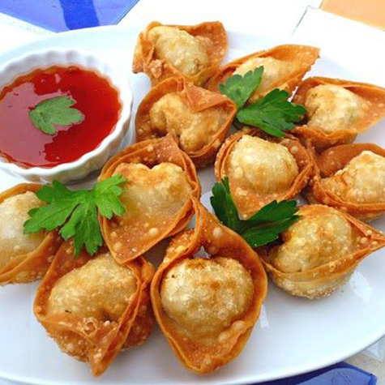
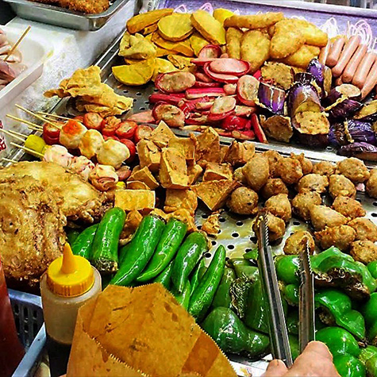

음식
중국식 바비큐
- 중국식 바베큐
- 슈메이로 알려진 중국식 바비큐는 홍콩에서 꼭 맛봐야 할 것 중 하나다. 전통적으로 조리된 중국식 구운 고기를 맛볼 수 있다.
홍콩 거리 곳곳에는 레스토랑 창문에 중국식 바비큐를 위한 고기를 잔뜩 매달아 놓은 풍경을 종종 마주한다. 홍콩에서는 양념한 고기를 화덕이나 로티세리 오븐에 굽는다. 잘 구워진 고기는 꼬치에 끼워 식당 안에 있는 창문에 걸어둔다. 패스트푸드 체인, 고급 레스토랑과 슈퍼마켓에도 바비큐 고기가 걸려있는 모습을 볼 수 있다. 중국 커뮤니티가 있는 곳이면 어디서나 볼 수 있는 맛과 풍경이다.
중국식 바비큐 레스토랑의 경우 쌀밥, 국수, 쌀국수와 함께 고기와 곁들여 먹을 수 있다. 혼밥하는 여행자들은 콤보 플레이트를 선택해보자. 혼자서도 다양한 부위의 구운 고기들의 마음껏 맛볼 수 있다.
중국식 바비큐 메뉴 추천
-
- 바비큐 돼지고기
- 중국어로 차슈라고 불린다. 번역하면 '태운 포크'라는 의미이다. 뼈 없는 돼지고기를 각종 양념에 재운 뒤, 포크에 끼워 화덕에서 솜씨 좋게 고기를 구워낸다. 꿀, 향신료, 두부, 청주 등의 양념을 사용해 돼지고기 특유의 잡냄새는 없애고, 달콤함을 느끼게 한다. 마지막 단계에 맥아당을 이용해 돼지고기의 표면은 반짝반짝 코팅한다.
-
- 바비큐 거위고기
- 양념에 재운 거위는 숯불에 굽는다. 이렇게 되면 고기의 속은 촉촉하고 겉은 바삭바삭해진다. 고기를 얇게 저며 매실 소스와 함께 곁들여 먹는다. 바비큐 거위 고기는 진공 포장도 가능해, 기념품이나 선물로도 인기다.
-
- 로스트 돼지고기
- 로스트 돼지고기는 두 가지 종류가 있다. 첫 번째는 슈육이다. 이는 마을 잔치에서 돼지 한 마리를 통째로 잡아 구웠던 데서 유래했다. 10 ~ 20kg의 양념된 돼지는 숯 오븐에서 속은 촉촉하고 껍질은 바삭해질 때까지 구워진다. 커다란 꼬챙이에 돼지를 꽂아 오븐에 고정한다. 껍질이 좀 더 탱글탱글한 식감을 유지할 수 있도록 뜨거운 물을 지속적으로 뿌려준다.두 번째는 새끼 돼지고기 구이다. 2개월에서 6개월 정도 됀 새끼 돼지를 숯불 위에 구워 먹는다. 연회에서 가장 좋아하는 바비큐로 주로 제일 첫 번째 서빙되는 메뉴다. 레스토랑에서도 주문할 수 있다.
딤섬
- 딤섬
- 딤섬은 '마음을 두드린다'는 의미를 갖고 있는 음식인 동시에 홍콩다운 즐거움이 가득한 음식이다.
광둥 지방 사람들은 튀긴 요리 대신 딤섬 메뉴같이 찐 요리를 선호한다. 볶거나, 튀기거나 구운 요리도 대나무 용기에 담아, 적은 사이즈로 함께 나눠먹는다. 딤섬은 얌차라고도 불린다. 얌차는 '차를 마시다'라는 뜻이다. 딤섬을 먹을 때에 항상 차와 함께 곁들여 마시는 경우가 많아 붙여진 이름이다. 홍콩에서 딤섬은 브런치나 점심으로 가볍게 즐기는 메뉴다. 홍콩 사람들은 가족, 친구, 직장 동료 등 여러 명이 모여 다양한 딤섬을 시켜놓고 왁자지껄 떠들며 먹기를 좋아한다.
오늘날 딤섬 레스토랑은 소박한 곳부터 크고 럭셔리한 곳까지 크기와 형태가 모두 다양하다. 처음에는 중간 정도 되는 가격의 대형 딤섬 음식점에서 딤섬을 시도해보자. 삼대가 모여 함께 즐거운 대화를 나누며 딤섬을 먹는 모습을 쉽게 만날 수 있다. 좋아하는 사람들과 딤섬을 먹는 일은 짧지만 효과적인 휴식 방법이다. 식당에 들어서면 웨이터가 몇 명인지를 말하고, 자리에 앉는다. 원하는 차를 선택한 후, 딤섬을 주문하면 된다. 홍콩 여행 중이라면 반드시 딤섬 문화를 경험해보자.
딤섬 메뉴 추천
-
- 새우찐만두
- 속이 살짝 보이는 얇은 반투명 반죽 피에 새우가 가득 들어 있습니다. 식당에 따라 죽순이나 돼지고기를 새우와 함께 넣기도 합니다.
-
- 샤오마이
- 전형적인 중국식 딤섬. 하카우와 더불어 한국인 입맛에 맞다. 정통 광동식 딤섬은 간 돼지고기, 새우, 버섯, 양파, 생강 등의 다양한 재료를 얇은 피로 감싸 청주, 간장, 참기름 등으로 양념한다. 샤오 마이 위에 붉은 꽃게알로 장식해 입맛을 돋운다.
-
- 차슈바오
- 마치 한국의 호빵과 비슷한 비주얼이지만 맛은 전혀 다르다. 두꺼운 만두피 안에 있는 천천히 익혀낸 돼지고기 안심은 부드럽고 달콤한 맛이 난다. 굴 소스를 곁들여 먹는다.
-
- 창펀
- 쌀가루로 만든 얇은 피 속에 새우, 쇠고기, 달콤한 돼지고기 등의 재료로 채워 만든 기다란 모양의 딤섬이다. 쪄서 간장에 찍어 먹는다.
-
- 스프링 롤
- 각종 야채와 고기 등의 재료를 얇은 도우에 돌돌 말아 롤을 만들어 잘 익도록 튀겨낸다.
-

- 튀긴 새우 덤플링
- 새우가 주 재료고 가끔 돼지 지방을 곁들이기도 한다. 속재료를 만두피에 넣고 말아서 튀겨낸다. 겉은 바삭히고, 속은 풍부한 육즙이 인상적이다.
-
- 차슈소우
- 얇은 페이스트리 안에 있는 달콤하게 잘 구운 돼지고기 속이 들어있는 딤섬이다. 겉으로 보기엔 만두보다는 빵에 더 가까워 보인다. 달콤해서 아이들이 좋아한다.
길거리 간식
- 길거리 간식
- 홍콩은 길거리 간식의 천국이다 각양각색의 특징이 살아있는 길거리 음식에 대해 알아보자
홍콩은 다양한 길거리 간식을 맛볼 수 있는 천국이다. 슬러시, 에그타르트, 문어볼을 먹으며 거리를 여행하는 즐거움이 있다. 손님들이 길게 줄 서 있는 집을 발견했다면, 홍콩에서 가장 인기 있는 맛집이다.
홍콩에서 간식은 레스토랑이나 길거리에서 테이크아웃으로 구매할 수 있다.
길거리 간식 메뉴 추천
-
- 파인애플 번
- 파인애플 번이라는 이름을 먼저 들으면 파인애플이 안에 들었을 것이라 생각한다. 하지만 파인애플 번의 이름은 겉면이 파인애플처럼 체크무늬가 있다는 데서 유래했다. 빵의 반은 쿠키 반죽으로, 나머지 반은 중국 스타일 빵 반죽으로 만든다. 부드럽고, 달콤해, 오후 간식으로 제격이다. 따뜻한 파인애플 번 안에는 차가운 버터를 넣는다.
-
- 에그타르트
- 페이스트리 안에 계란 커스터드를 채워 넣고 굽는다. 홍콩의 에그타르트는 아마도 잉글리시 커스터드 케이크에서 유래된 것으로 보인다. 쿠키 도우를 사용해 과자 같은 맛을 내는 곳도 있고, 페이스트리를 사용해 바삭한 맛을 중시하는 곳도 있다.
-
- 페이크 샥스핀 수프
- 비싼 연회 요리인 샥스핀과 비슷한 맛을 내는 수프다. 샥스핀보다 좀 더 저렴한 생선을 사용해 만든다. 가볍게 먹기 좋다.
-
- 와이프 케이크
- 겨울 멜론(동과)을 넣은 번. 와이프 케이크라고 이름이 붙여진 데에는 재미있는 이야기가 전해온다. 광둥 지역에서 동과를 넣은 빵에 대해 사람들이 크게 칭찬하자, 남편은 '와이프 케이크'라며 동네방네 자랑을 하며 다녔다. 예전에는 홍콩에서 신계 지역까지 가는 데 하루 정도 소요되었다. 유엔롱에 방문하는 사람들은 반드시 와이프 케이크를 사서 집으로 가져가는 등 지역 명물이 되었다. 하지만 오늘날에는 홍콩 전역의 베이커리에서 어디에서든 와이프 케이크를 구입할 수 있다.
-
- 미니 에그 퍼프
- 한국에 있는 미니 계란빵 모양이다. 껍질은 바삭하고, 안은 부드럽다. 최근에는 초콜릿, 딸기, 코코넛 등을 빵 안에 넣어 다양하게 즐길 수 있다.
-
- 풋 차이 코
- 찹쌀 푸딩'이라는 알려진 풋 차이 코는 쌀가루와 팥으로 만든다. 재료를 섞어 작은 중국식 볼에 담아 푸딩을 완성한다. 푸딩을 그릇에서 꺼내 막대기에 꺼내 막대사탕처럼 먹을 수 있다. 최근에는 호박과 녹차 맛도 등장했다.
-
- 화이트 슈거 케이크
- 광둥성의 순더 지역에서 시작된 전통 과자다. 쌀가루, 설탕, 물, 효모를 반죽하여 쪄서 만들어진다. 한국의 백설기와 비슷한 비주얼. 약간의 신맛과 함께 달콤한 맛이며 부드럽고도 폭신폭신하다.
-
- 피쉬볼
- 홍콩 사람들은 저마다 피시 볼 단골이 있을 만큼 대중적인 간식이다. 한국의 '어묵 꼬치'와 비슷한 느낌. 홍콩 스타일의 피시 볼은 신선한 생선으로 만들어져 쫀득쫀득한 질감이 남다르다. 손으로 반죽해서 더욱 탄력 있는 피시 볼이 만들어진다. 매콤한 카레 소스에 찍어 먹는다.
-
- 취두부
- 취두부는 이름만 들어도 지독한 향이 느껴지지만 실제의 맛은 부드럽다는 것이 반전인 음식이다. 싱싱하게 발효된 두부를 바삭바삭하게 튀겨 칠리소스나 호이신 소스를 찍어 먹는다. 홍콩에서 가장 인기 있는 길거리 음식이다.
-
- 쇠고기 부산물 요리
- 중국 요리에서는 소의 어느 부위도 낭비 없이 사용되는데, 그것에서 쇠고기 부산물에 대한 현지의 사랑을 알 수 있다. 오랜 시간 조리해 부드럽게 만든 대창, 양, 허니콤 트리프, 허파에 츄하우 소스를 얹어 신선하고 달콤한 순무와 함께 곁들여 제공한다.
-

- 세 가지 보물
- 세 가지 보물'이라는 별칭으로 불리지만, 세 가지 이상의 재료가 포함된다. 얇게 채 썬 가지, 피망, 두부, 훈제 소시지, 버섯이 들어간다. 간장과 고추기름을 곁들여 먹으면 더욱 맛있다.
국수&콘지
- 국수&콘지
- 홍콩 현지인들이 어디서나 간단하게 즐기는 메뉴로 일반적으로 한 레스토랑에서 둘 다 맛볼 수 있다.
국수와 콘지(쌀죽)는 같은 레스토랑에서 만드는 경우가 대부분이다. 몇몇 전통 있는 레스토랑은 입구 근처에 두 개의 오픈 키친을 둔다. 한 곳에서는 콘지만, 한 곳에서는 누들만 만드는 방식이 흥미롭다.
콘지는 쌀만 넣고 만든 간단한 죽부터 야채와 고기 등이 듬뿍 들어간 핫팟 스타일까지 종류가 다양하다. 국수와 콘지는 홍콩에서 24시간 내내 즐길 수 있는 메뉴다. 늦은 밤 홍콩에서 맛보는 국수와 콘지는 야식으로 최고다.
국수&콘지 메뉴 추천
-
- 광둥식 콘지
- 콘지는 중국 전역에서 즐겨 먹는 음식이다. 하지만, 광둥 지역과 홍콩의 콘지는 다른 지역보다 정성스럽게 만든다. 신선한 재료를 죽에 넣어 은근한 불에 계속해서 끓이면 맛이 조화롭게 어우러진다.
-
- 치우 차우 스타일 콘지
- 광둥성 광저우 출신의 치우 차우 사람들은 그들의 전통 요리 방식과 사투리를 홍콩으로 가져왔다. 신선한 어린 굴을 죽에 넣는 것 같은 신선한 해산물을 콘지에 사용하는 것이 특징이다. 치우 차우 콘지는 요리 한 뒤 뚜껑을 덮어서 30분 정도 뜸을 들였다가 먹는다. 콘지의 식감은 더욱 부드러워지고, 풍미가 깊어진다.
-
- 생선완자 쌀국수
- 쌀국수는 고기 완자(소고기 볼)나 생선 완자(피시 볼)를 넣어 함께 먹는다. 광둥식 미트볼과 피시 볼은 서구의 미트볼과는 질감부터 다른 것이 특징이다. 서구의 미트볼이 갈아서 만든다면, 광둥식은 고기가 분쇄될 때까지 두들겨서 만들기 때문에 무척 부드럽다.
-
- 완탕면
- 한입 사이즈의 완자를 구수하고 깊은 맛을 내는 육수, 국수와 함께 말아 먹는 면 요리다. 최근에는 한국에서도 홍콩식 완탕면을 즐길 수 있는 곳이 많아졌다. 완자만 골라 먹어도 맛있고, 국수와 국물과 함께 곁들여 먹어도 시원하다. 새우와 돼지고기가 7:3의 비율로 섞여 있는 완탕이 가장 맛있다.
-
- 소고기 볶음 국수
- 홍콩에서 국수는 일반적으로 쌀이나 계란, 밀가루로 만든다. 다양한 방법으로 국수를 먹지만, 그중에서도 볶아서 먹는 방법이 가장 대중적이고 인기 있다. 특히 소고기와 함께 볶은 국수는 국수를 볶아먹는 것이 가장 일반적이다.
-
- 카트 누들
- 원하는 누들이 메뉴에 없다고 실망하지 않아도 된다. 원하는 재료를 주문해서 나만의 누들을 만들 수 있는 카트 누들이 있으니 말이다. 카트 누들은 1950년대 길거리에서 시작된 재미있는 방식이다. 저렴한 가격으로 재료의 가짓수와 양, 종류를 선택할 수 있어 배부르게 먹을 수 있는 대표적인 서민 음식이다.
-
- 로우 딩
- 닭튀김과 다진 양파를 올린 인스턴트 국수. 1970년대 홍콩에서부터 시작되었다. 빠르게 변화하는 홍콩의 시대상에 부합하는 음식으로 여전히 빠르고 편하고 맛있게 먹을 수 있는 식사다.
디저트
- 디저트
- 홍콩 스타일과 퓨전 스타일이 잘 조화된 이색적인 달콤한 디저트들을 만나보자.
홍콩 로컬들에게도 달콤한 디저트는 언제나 필요하다. 홍콩 시내 곳곳에는 지친 도시 생활에 활력을 불어 넣어주는 맛있는 디저트 숍들로 가득하다. 전통적인 중국식 달콤한 스프류에서 홍콩에서만 맛볼 수 있는 이색 퓨전 디저트를 즐기는 데에는 밤낮이 따로 없다. 홍콩의 다양한 디저트를 즐기며, 여행 중 달콤한 휴식을 즐겨보자.
디저트 메뉴 추천
-
- 단팥죽
- 전통적인 중국식 디저트. 많은 사람들이 수프처럼 먹는다. 달콤하면서도 칼로리 부담도 적다. 계절에 따라 차갑게 식혀 먹을 수도 있고, 따끈하게 먹을 수 있다.
-
- 두부 푸딩
- 부드러운 두부로 만든 두부 푸딩은 달콤한 생강 또는 시럽과 함께 먹는다. 팥죽, 코코넛 밀크 등의 다른 재료와도 잘 어울리는 편.
-
- 탕위안
- 새알심 같은 모양의 달콤한 음식이다. 발음이 '가족 모임'과 비슷해 중국에서는 가족들이 함께 모였을 때 먹는 디저트다. 찹쌀가루 속에 달콤한 것들로 속을 채워 넣어 만든다. 참깨, 땅콩, 스위트 빈 페이스트를 넣는다. 달콤한 수프 속에 탕위안을 넣어 먹는다. 종종 고구마나 생강으로 만든 죽 속에 함께 넣어 만들기도 한다.
-
- 화이트 펑거스 & 배 수프
- 인기 있는 겨울 디저트다. 재료들을 커다란 솥에 넣고 푹 잠기게 한 뒤 몇 시간 동안 푹푹 끓여낸다. 한국의 배숙과 비슷한 모습. 많은 이들은 이 수프가 피부에 영양을 넣어준다고 믿는다.
-
- 망고 푸딩
- 홍콩 디저트의 대명사. 한천, 신선한 망고, 무가당 연유, 설탕으로 만든다. 동남아와 홍콩 스타일이 조화를 이뤄 오늘날의 모습으로 재탄생했다. 차갑게 식혀 나온 상태로 먹는 망고 푸딩은 가벼우면서도 부드러운 질감이 일품.
-
- 두리안 디저트
- 홍콩의 디저트 숍에서는 두리안이 빠지지 않는다. 한국인 사이에서는 특히 호불호가 갈리는 과일이 바로 두리안. 홍콩에서 두리안 아이스크림, 두리안 셔벗, 두리안 슬러시에 도전해보며 두리안의 '맛'에 친숙해질 수 있다.